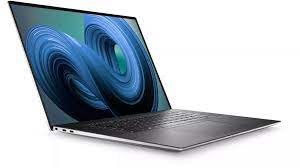

Products
Size 15.6" Operating System Windows 11 The Dell XPS 15 (2023) is a high-end Windows mobile workstation. This 9530 model replaces the Dell XPS 15 9520 from 2022. Its external design is identical to its predecessor, as only the internal components have changed. It's available with an Intel 13th Gen Core i5, i7, or i9 H-series CPU with up to 64GB of RAM and up to 8TB of storage.

The Microsoft Surface Laptop 5 is the company's latest laptop computer developed to supersede the Surface Laptop 4. The device was announced on October 12, 2022 introducing 2 new colors and alongside the Surface Pro 9 and Surface Studio 2 Plus. The laptop is powered by the new Windows 11 operating system with the 2022 update and the 12th generation Intel Core processors.